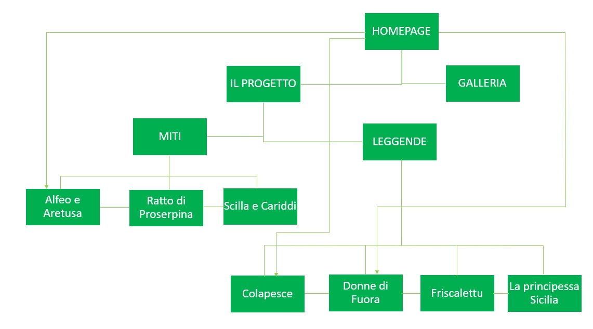
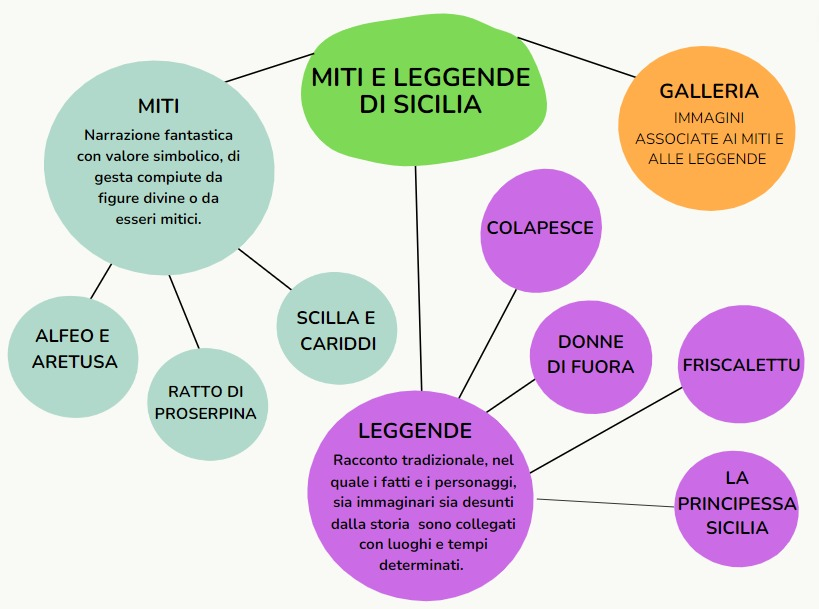
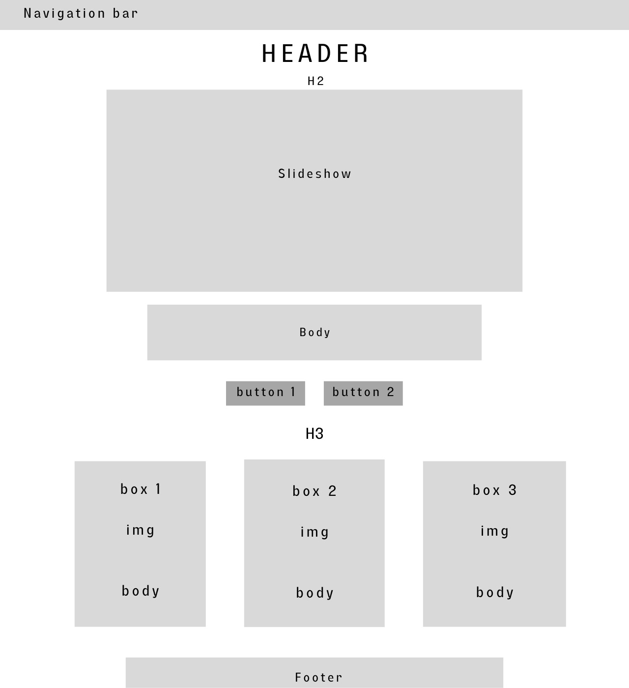
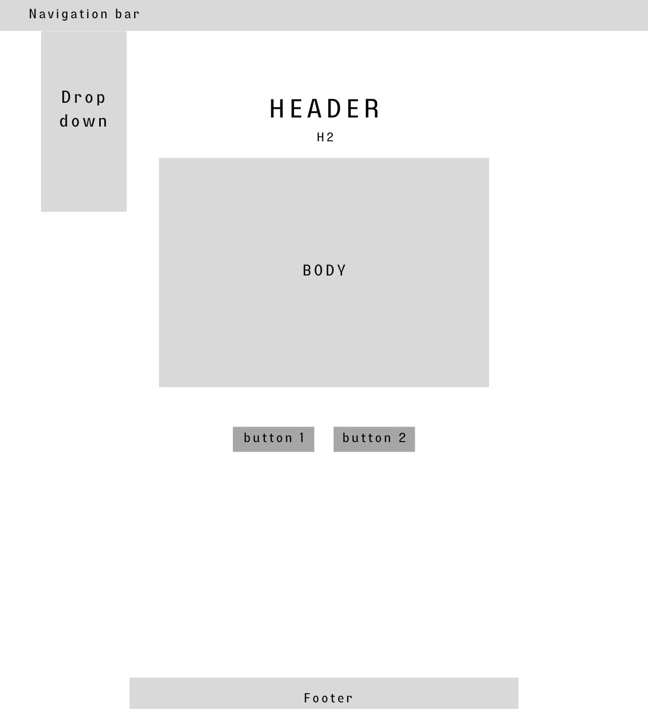
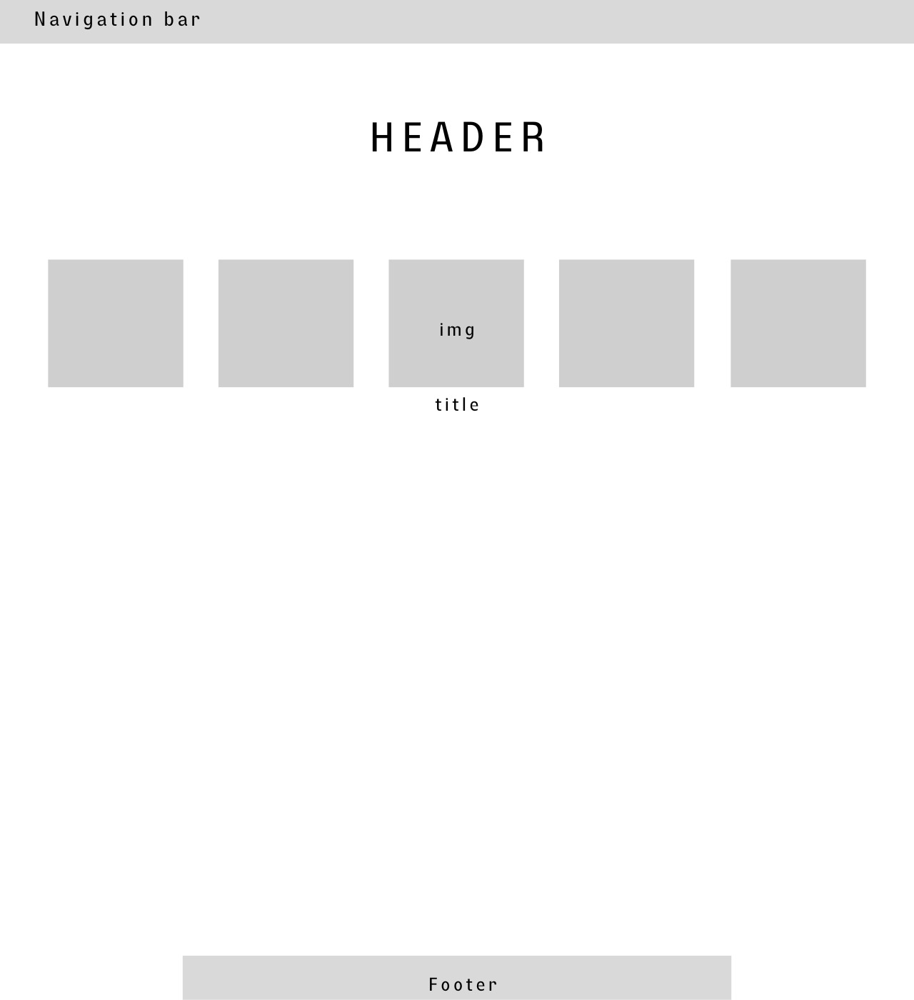
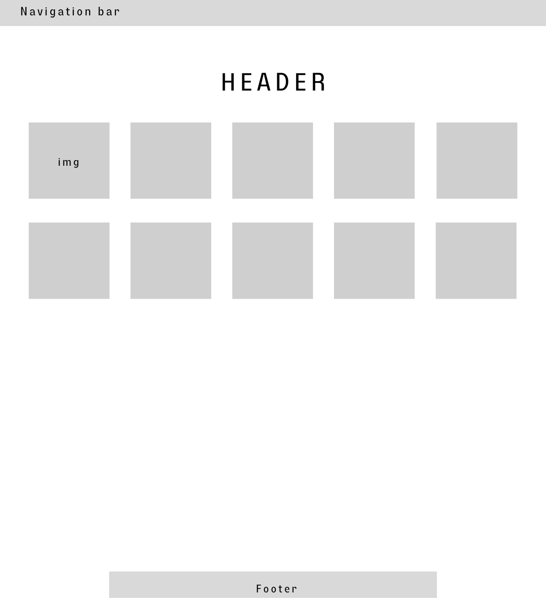
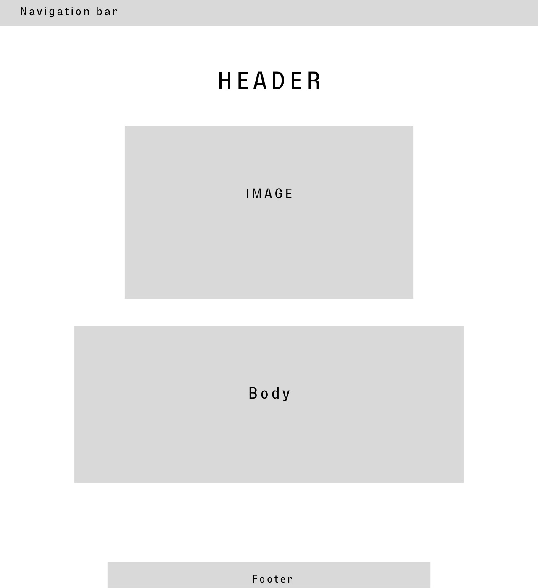

1. Idea
Ho in mente di creare un sito che raccolga miti e leggende della Sicilia, ogni racconto associato ad un’immagine, in modo che siano a disposizione (in un unico luogo) degli utenti del Web che hanno interesse per l’oggetto in questione, sia per accrescimento della cultura generale personale sia per eventuali ricerche scolastiche. La piattaforma sarà a libero accesso per chiunque voglia usufruirne. Sarà di facile e intuitivo utilizzo cosicché il maggior numero di utenti possa servirsene.
2. Brief
Voglio ottenere un sito che, raccogliendo un gran numero di miti e leggende siciliane, possa semplificare ricerche sull’argomento, questo infatti è sempre meno conosciuto anche dalla gente del luogo.
Il pubblico a cui è rivolto è vario, possono accedere ragazzi e adulti e possono leggere le storie, guardare le immagini, scoprire altri siti da cui le informazioni sono state prese e imparare qualcosa di nuovo.
Comunico attraverso testo, immagini e talvolta link per video musicale.
I contenuti sono in rete, ho utilizzato risorse presenti nel web a disposizione di tutti.
3. Benchmark
Non mi sono imbattuta in un sito che raccolga insieme i vari miti e le leggende di Sicilia, tuttavia ho trovato blog o pagine dedicate all’isola che avessero inserti riguardanti la sfera da me trattata. A mio avviso una raccolta di questi può semplificare la visione d’insieme dei testi in quanto, cercandoli uno per uno in siti disparati, si può verificare una perdita di attenzione degli utenti.
Sicuramente i servizi di indice, galleria immagini ed altri si trovano in tutte le raccolte di testi o immagini che esistono sul web, questi sono fondamentali anche nel mio progetto.
Non avendo trovato siti propriamente concorrenti posso citare due pagine dedicate alla Sicilia nella sua interezza: “Il viaggio in Sicilia” (
https://www.ilviaggioinsicilia.it/) e “Sicilying” (
https://www.sicilying.com/it/blog/).
Il primo, Il viaggio in Sicilia, è una guida che quotidianamente approfondisce i temi e gli eventi legati alla cultura, al turismo e al territorio siciliano. Troviamo una sezione che vede tutte le province e i comuni siciliani, una sezione con le diverse categorie trattate (arte e cultura, cucina, mare, moda, natura e così via), una sezione per le pubblicazioni e una per gli eventi.
Il secondo, Sicilying, presenta nella side navigation cose da fare, posti da vedere, curiosità ed esperienze ed una sezione dedicata a “come fare” per raggiungere luoghi d’interesse.
4. Struttura
Struttura gerarchica ad albero delle dipendenze:

Mappa dei contenuti:

5. Layout
Homepage

Il progetto

Indice 1/2

Galleria

Item

6. Usabilità
Architettura: il posizionamento degli strumenti di navigazione è sempre nello stesso posto ogni volta che si cambia pagina; non ho usato box di approfondimento laterali; è sempre possibile tornare alla home da qualsiasi pagina grazie alla presenza del tasto ‘home’ nella barra di navigazione fissa.
Aspetto e tipografia: lo stile (colori, font, posizionamenti) è il medesimo in ogni pagina del sito; i testi di anteprima nella home sono brevi e nelle pagine degli item, dove i testi sono più lunghi, vi sono immagini che intervallano oppure divisione in paragrafi o anche uso di tabs e accordion.
Colori, icone e font: i colori principali sono il bianco come sfondo e il verde per la navigation bar, per i buttons e per tabs e accordion; il font utilizzato è Verdana Sans Serif.
7. Servizi
Sistemi di Browsing: breadcrumbs, pagination.
Utilities e tools per l’interazione: sono presenti bottoni che cambiano di stato al passaggio del mouse; modali per le immagini; accordion; tabs; dropdown per l’indice; Slideshow delle immagini.
Strumenti, servizi, tool, metodi da utilizzare per valorizzare l'accesso utente: sono presenti buttons, dropdown, accordion, tabs, modal.
8. Biblio/Sitografia
Testi:
https://wonderfulitaly.eu/it/magazine/arte-e-cultura/la-leggenda-della-fonte-aretusa-a-ortigia-822
http://www.analisiqualitativa.com/magma/1701/articolo_05.htm
https://www.sicilias.it/la-leggenda-colapesce-colui-porta-sulle-spalle-la-sicilia/
https://www.nuoveverrine.it/le-donne-di-fuora-curtigghio-ed-altri-aneddoti/
https://www.ragusanews.com/cultura-u-friscalettu-aristeo-e-lo-spirito-della-principessa-annegata-168323/
https://ecointernazionale.com/2021/04/mito-principessa-sicilia/
http://www.letteraturaalfemminile.it/ilrattodiproserpina.htm
https://siviaggia.it/varie/scilla-cariddi-leggenda/364933/#:~:text=le%20rende%20celebri.-,La%20leggenda%20di%20Scilla%20e%20Cariddi,del%20mare%20causando%20mortali%20vortici
Immagini:
https://www.google.com/url?sa=i&url=https%3A%2F%2Fwww.lasiciliainrete.it%2Fdirectory-tangibili%2Flisting%2Fmito-di-alfeo-e-della-ninfa-aretusa%2F&psig=AOvVaw3fBn-IDbe7tHYskuKvwwQv&ust=1705165298557000&source=images&cd=vfe&ved=0CBQQjhxqFwoTCICd1vap2IMDFQAAAAAdAAAAABAE
https://www.baccosrl.com/wp-content/uploads/2017/10/Leggenda-di-Colapesce.jpg
https://www.google.com/url?sa=i&url=https%3A%2F%2Fwww.nuoveverrine.it%2Fle-donne-di-fuora-curtigghio-ed-altri-aneddoti%2F&psig=AOvVaw3VntVzxnihDfZWB9_nBn2_&ust=1705311404684000&source=images&cd=vfe&ved=0CBIQjRxqFwoTCOCnypjK3IMDFQAAAAAdAAAAABAE
https://www.google.com/imgres?imgurl=https%3A%2F%2Fwww.ragusanews.com%2F%2Fimmagini_articoli%2F31-10-2022%2Fu-friscalettu-aristeo-e-lo-spirito-della-principessa-annegata-500.jpg&tbnid=iPKHVm1d9MaXPM&vet=12ahUKEwiEl97PytyDAxUa_bsIHbXCD8EQMygAegQIARAy..i&imgrefurl=https%3A%2F%2Fwww.ragusanews.com%2Fcultura-u-friscalettu-aristeo-e-lo-spirito-della-principessa-annegata-168323%2F&docid=G0CxR6PbdoZ-WM&w=750&h=500&itg=1&q=u%20friscalettu%20%20aristeo&ved=2ahUKEwiEl97PytyDAxUa_bsIHbXCD8EQMygAegQIARAy
https://www.google.com/imgres?imgurl=https%3A%2F%2Fecointernazionale.com%2Fwp-content%2Fuploads%2F2021%2F04%2Fsicilia-1.jpg&tbnid=wfBuQv18mzDI_M&vet=12ahUKEwjSzpvaytyDAxWHgv0HHRMNCpQQMygFegQIARBQ..i&imgrefurl=https%3A%2F%2Fecointernazionale.com%2F2021%2F04%2Fmito-principessa-sicilia%2F&docid=HDgUhljOeIYp9M&w=800&h=450&q=principessa%20sicilia&ved=2ahUKEwjSzpvaytyDAxWHgv0HHRMNCpQQMygFegQIARBQ
http://www.letteraturaalfemminile.it/ratto%20di%20proserpina.jpg
https://www.google.com/imgres?imgurl=https%3A%2F%2Fwww.ilviaggioinsicilia.it%2Fwp-content%2Fuploads%2F2019%2F06%2FScilla-e-Cariddi.jpg&tbnid=Wq_cdY8vCPkADM&vet=12ahUKEwiazPKQy9yDAxWa7bsIHZe9Ad0QMygJegUIARCGAQ..i&imgrefurl=https%3A%2F%2Fwww.ilviaggioinsicilia.it%2Fla-leggenda-di-scilla-e-cariddi%2F&docid=Dyk0LXZzM-5_mM&w=850&h=550&q=scilla%20e%20cariddi&hl=it&ved=2ahUKEwiazPKQy9yDAxWa7bsIHZe9Ad0QMygJegUIARCGAQ
Video:
https://youtu.be/bYvGXIUJuGw
Strumenti, Tool, Applicazioni e componenti diverse:
https://www.w3schools.com/
https://github.com/
https://www.sublimetext.com/
https://analytics.google.com/
{kind=link}
{kind=link}
{kind=link}
{kind=link}
{kind=link}